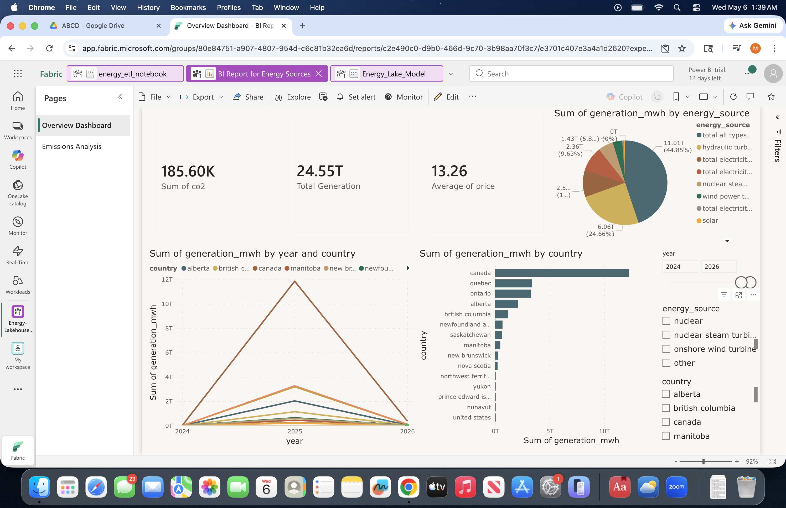

The challenge
Prepare energy-related data for consistent exploration, comparison, and reporting.
PROJECT CASE STUDY · MICROSOFT FABRIC
Exploring how energy-sector datasets can be organized, transformed, and presented through a Microsoft Fabric lakehouse and Power BI reporting workflow.
01 · PROJECT OVERVIEW
Energy information can come from different sources, use different structures, and measure different aspects of the energy sector. This project explores a data workflow that brings selected datasets into a common analytical environment and presents the resulting information through an interactive dashboard.
Prepare energy-related data for consistent exploration, comparison, and reporting.
Use Fabric and PySpark to organize and transform datasets for analytical consumption.
Present energy generation, emissions, and pricing measures in a report for exploration.
02 · DATA ARCHITECTURE
The following is a high-level representation of the workflow. Update it to reflect the exact components and processing steps you implemented.
Selected energy datasets from public information sources.
Inspect, clean, standardize, and transform data using the implemented Fabric workflow.
Organize prepared datasets for reuse and analytical queries.
Explore measures, trends, geographic comparisons, and report filters.
Architecture overview · Conceptual representation, not a verified record of every implemented component.
03 · DASHBOARD WALKTHROUGH
The report brings several energy indicators together so users can explore generation, emissions, pricing, and geographic patterns.

Summary cards present the displayed CO₂ measure, total generation, and average price.
Country-level comparisons help users examine how reported generation differs across locations.
Source categories allow users to explore the composition of the generation represented in the report.
04 · ANALYTICAL QUESTIONS
How does reported energy generation vary across years and geographic areas?
What share of the displayed generation is associated with each source category?
How do the available emissions and price measures change across the selected data?
These are analytical questions, not conclusions about causation. Interpret each measure using its source, units, date range, and data coverage.
05 · ENGINEERING DECISIONS
Before comparing energy information, verify that date fields, geographic names, energy-source labels, and units are represented consistently. Differences in source definitions can otherwise lead to misleading comparisons.
Data preparation should make the transformations traceable and help identify missing values, unexpected records, and incompatible data types. Document the checks actually used in your project.
A well-structured analytical dataset makes report measures easier to maintain and interpret. The dashboard should communicate what each measure represents and the period and geography it covers.
06 · LIMITATIONS AND NEXT STEPS
Energy datasets can differ in reporting periods, geographic coverage, measurement units, and definitions. These differences should be checked before drawing conclusions from comparisons.
Record the dataset name, publisher, retrieval date, and relevant definitions.
Confirm units, aggregation rules, missing periods, and the meaning of each KPI.
Document the transformation workflow and add data-quality checks that can be repeated.
PROJECT SUMMARY
This project demonstrates an approach to preparing energy datasets for analysis using Microsoft Fabric and presenting the resulting measures through Power BI. The next step is to document the exact source datasets, implemented transformations, and validated findings.